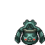
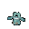

Pokédex / #437
Bronzong #437
SteelPsychic
It brought rains by opening portals to another world. It was revered as a bringer of plentiful harvests.
Generation 4 · Sinnoh

Stats
| Attack | 89 | |
|---|---|---|
| Defense | 116 | |
| Sp. Atk | 79 | |
| Sp. Def | 116 |
In the wild
| Wild level | 40–50 |
|---|---|
| HP | 67 |
| Experience | 10 |
| Egg groups | Mineral |
Evolution
- Evolves from Bronzor at level 35.
Moves
| Level | Move | Type | Category | Power | Energy | Cooldown | Effect | |
|---|---|---|---|---|---|---|---|---|
| 1 | Tackle | Normal | Physical | 15 | 15 | 1s | Tackle is one of the most common and basic moves a Pokemon learns. It deals damage with no additional effects. | |
| 5 | Confuse Ray | Ghost | Status | – | 50 | 9s | Confuse Ray causes the target to become confused. | |
| 10 | Gyro Ball | Steel | Physical | 10 | 110 | 23s | Gyro Ball deals damage and has no secondary effect. | |
| 15 | Heavy Slam | Steel | Physical | 80 | 80 | 12s | Heavy Slam does damage and has no secondary effect. | |
| 20 | Confusion | Psychic | Special | 50 | 60 | 12s | Confusion deals damage and has a 10% chance of confusing the target. | |
| 25 | Payback | – | Physical | – | 100 | 90s | Any move is reflected back to the attacker. | |
| 30 | Extrasensory | Psychic | Special | 80 | 95 | 18s | Extrasensory inflicts damage and has a 10% chance of causing the target to flinch. | |
| 40 | Zen Headbutt | Psychic | Physical | 80 | 80 | 15s | Zen Headbutt deals damage and has a 20% chance of causing the target to flinch. | |
| 45 | Flash Cannon | Steel | Special | 80 | 95 | 18s | Flash Cannon deals damage and has a 10% chance of lowering the target's Special Defense by one stage. | |
| 50 | Iron Head | Steel | Physical | 80 | 80 | 12s | Iron Head inflicts damage and has a 30% chance of causing the target to flinch. | |
| 55 | Iron Defense | Steel | Status | – | 90 | 60s | Iron Defense raises the user's Defense stat by two stages. | |
| 60 | Psychic | Psychic | Special | 90 | 100 | 21s | Psychic deals damage and has a 10% chance of lowering the target's Special Defense by one stage. | |
| 65 | Dream Eater | Psychic | Special | 100 | 120 | 15s | Dream Eater deals damage only on sleeping foes and the user will recover 50% of the HP drained. | |
| 70 | Future Sight | Psychic | Special | 120 | 120 | 15s | Future Sight deals damage, but does not hit until two turns after the move is selected. |
Field abilities
Rock SmashFlashStrength
Special abilities
Levitate
Egg moves
None
Technical machines
Calm MindDouble TeamDream EaterEarthquakeExplosionFacadeHidden PowerHyper BeamLight ScreenProtectPsychicRain DanceReflectRestRock SlideRock TombSafeguardSandstormSecret PowerShadow BallSolar BeamSubstituteToxic
Drops
| Item | Amount | Chance | |
|---|---|---|---|
| prismatic quartz | 1 | 20% | |
| magnet | 1 | 13.3% | |
| stone orb | 1 | 8% | |
| metal spike | 1 | 7.69% | |
 | bronzong doll | 1 | 0.1% |
| Mind Plate | 1 | 0.001% | |
| Iron Plate | 1 | 0.001% |